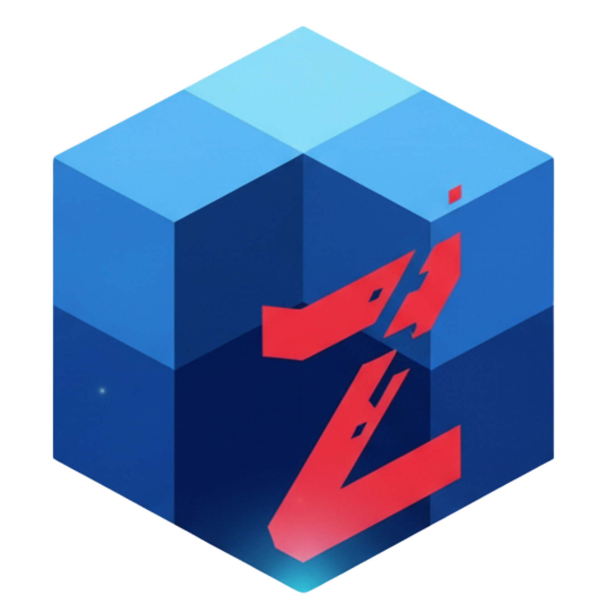

FuncZ
Plataforma viva de automação interna
A evolução do AtivosZ
Plataforma viva de automação interna
A evolução do AtivosZ
AtivosZ e FuncZ nasceram de um problema real do dia a dia operacional. Em vez de cartazes e documentos dependerem do crediário, gerando atrasos, erros e sobrecarga, a ideia foi simples: devolver autonomia a quem realmente precisava produzir.
O AtivosZ começou como uma solução prática — uma planilha inteligente — e evoluiu para um sistema completo capaz de gerar cartazes, controlar sessões, padronizar modelos e reduzir retrabalho. Com o crescimento do uso e a mudança dos layouts institucionais, surgiu o FuncZ: uma nova fase da mesma plataforma, agora estruturada, escalável e alinhada à identidade do Grupo.
Mais do que automatizar processos, o projeto transformou a forma como as pessoas trabalham: menos dependência, menos estresse e mais produtividade. Hoje, o FuncZ é uma ferramenta real em uso em múltiplas filiais, e também uma demonstração viva de como tecnologia, quando bem aplicada, pode melhorar tanto a operação quanto a experiência humana no trabalho.
Resolver problemas operacionais reais e eliminar gargalos de dependência
Atrasos, erros, sobrecarga e falta de autonomia das equipes operacionais
De planilha inteligente a plataforma modular, escalável e alinhada ao Grupo
Tecnologia que melhora a operação e a experiência humana no trabalho
A história de quem transformou vivência em solução

Criador do AtivosZ / FuncZ
Assistente administrativo | Suporte T.I
Gabriel iniciou sua trajetória como Jovem Aprendiz na Filial 28. Após o encerramento do contrato, foi efetivado na Filial 02, onde continuou seu desenvolvimento profissional.
Seu interesse por tecnologia, processos e automação o levou ao Suporte de T.I, área onde hoje atua e onde criou o AtivosZ e sua evolução, o FuncZ.
O projeto nasceu da vivência prática no chão da operação, transformando problemas reais em soluções digitais que hoje impactam várias filiais.
Jovem Aprendiz
Primeiros passos na empresa, aprendendo sobre operação e processos do dia a diaAtendente de Lojas
Desenvolvimento profissional e compreensão profunda dos desafios operacionaisTécnico de Suporte T.I
Criação do AtivosZ e FuncZ — transformando conhecimento em solução digital"O FuncZ não nasceu de uma empresa de software, mas da evolução profissional de alguém que vive a operação e resolveu o problema de dentro."
Navegue pela arquitetura modular do FuncZ
De "E se...?" até a evolução contínua
O FuncZ não é apenas um gerador de cartazes. É uma plataforma viva que se adapta às mudanças do negócio, automatiza processos críticos e escala conforme a empresa cresce.
Cada componente é independente, permitindo atualizações sem interromper o fluxo operacional
Arquitetura preparada para crescer de 3 para 30 filiais sem reescrever código
Código documentado e estruturado para manutenção de longo prazo